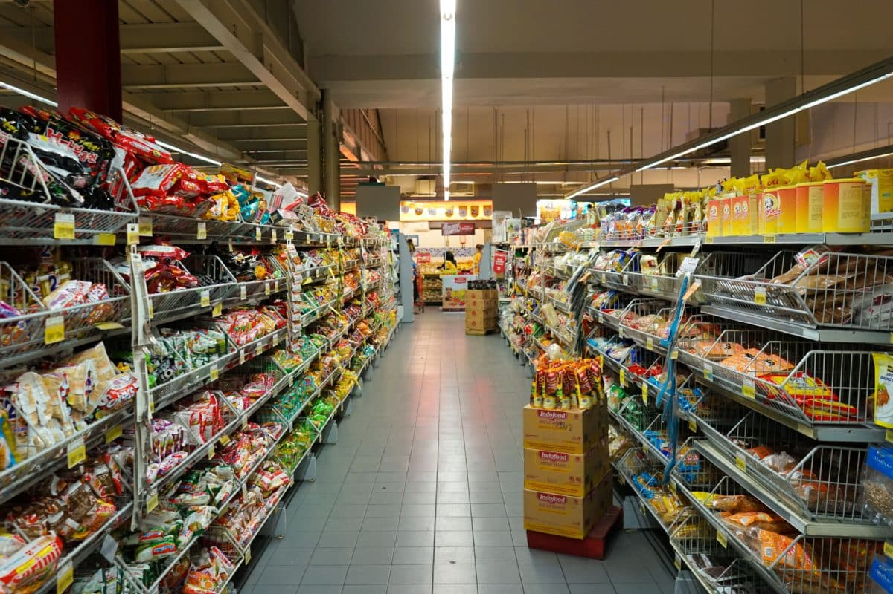

Using Microsoft Power BI, I conducted a comprehensive analysis of car insurance data to identify trends, patterns, and insights that can inform business decisions
The analysis focused on [ claims frequency, customer demographics, coverage types, etc.]. By leveraging Power BI's data visualization and business analytics capabilities, I uncovered key findings that can help optimize insurance offerings, improve risk assessment, and enhance customer engagement.

Develop a data-driven Retail Performance Dashboard to provide actionable insights and strategic recommendations for business growth. The dashboard will track key performance indicators (KPIs), analyze sales trends, and identify areas for improvement.
.
This interactive report provides a comprehensive analysis of pizza sales data using Microsoft Power BI. The report explores key trends, patterns, and insights to inform business decisions and optimize pizza sales.

I led a data-driven analysis of retail sales and customer behavior, revealing actionable insights and strategic opportunities. My findings enabled data-informed decision-making, driving business growth and optimization.